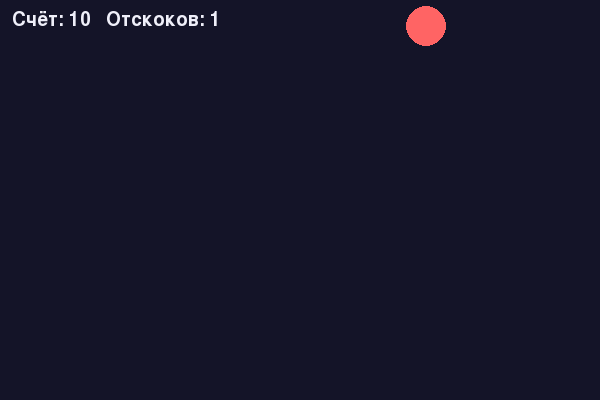
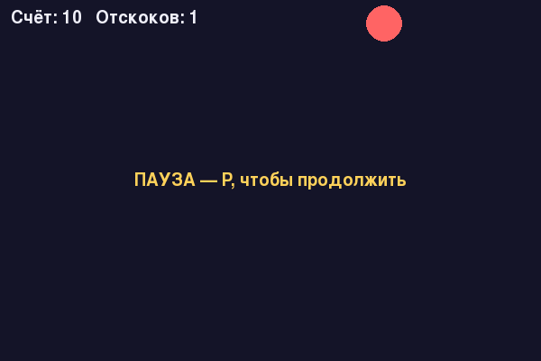

Финальный проект: «Прыгающий мяч» с архитектурой Game
Тот же мяч, что и в разделе 20.5 — но теперь с архитектурой, которая переживёт рост проекта в нечто большее, чем один файл.
Вернёмся к прыгающему мячу из раздела 20.5 в последний раз — но теперь пересоберём его
заново, применив всё, что глава добавила по пути: архитектуру класса
Game (раздел 20.26), движение через delta time (раздел 20.16) и
явные состояния игры (раздел 20.25).
Что изменилось по сравнению с версией 20.5
| bouncing_ball_basic.py (20.5) | bouncing_ball.py (эта версия, Pro) | |
|---|---|---|
| Организация кода | Глобальные переменные, плоские функции | Класс Game с методами handle_events/update/render/run |
| Движение | x += dx за кадр — зависит от FPS | x += vx * dt — не зависит от FPS (раздел 20.16) |
| Пауза | Нет | Есть, останавливает update(), не только отрисовку |
| Рестарт | Нет — нужно перезапускать программу | Клавишей, без перезапуска процесса |
| Счёт | Нет | Счёт очков и счётчик отскоков |
| Взаимодействие мышью | Нет | Клик мышью — необязательный разворот мяча в сторону клика |
class BouncingBallGame:
def __init__(self):
pygame.init()
self.screen = pygame.display.set_mode((SHIRINA, VYSOTA))
self.clock = pygame.time.Clock()
self.state = SostoyanieIgry.IGRA
self.running = True
self._reset_myach()
def update(self, dt):
if self.state is not SostoyanieIgry.IGRA:
return
self.x += self.vx * dt
self.y += self.vy * dt
if self.x - RADIUS < 0 or self.x + RADIUS > SHIRINA:
self.vx = -self.vx
self.otskokov += 1
if self.y - RADIUS < 0 or self.y + RADIUS > VYSOTA:
self.vy = -self.vy
self.otskokov += 1

Полный, уже проверенный файл — отдельно:
projects/pygame/bouncing-ball/bouncing_ball.py
Добавьте второй мяч и столкновение между двумя мячами через colliderect() (раздел 20.21), а не только со стенами.
Добавьте состояния MENU и GAME_OVER (раздел 20.25): игра стартует в MENU по нажатию клавиши, а после определённого числа отскоков переходит в GAME_OVER с финальным счётом на экране.
Итоги главы
Что мы узнали в этой главе
- Pygame — библиотека, а не движок: она даёт окно, отрисовку, ввод и звук, а структуру игры вы строите сами (раздел 20.8).
- Разработка игр — целый мир ролей, жанров и платформ, и Pygame уверенно закрывает прежде всего десктоп, а веб и мобильные — через отдельные инструменты сообщества (разделы 20.6–20.13, 20.29–20.31).
- В этой главе мы строили игровой цикл по базовой схеме Input → Update → Render, повторяемой десятки раз в секунду (раздел 20.14).
- Движение в «пикселях за кадр» зависит от чужого железа; движение через delta time — нет (раздел 20.16).
- pygame.Rect и colliderect() — основа столкновений, а хитбокс не обязан совпадать с рисунком (раздел 20.21).
- Явные состояния игры (enum) и разделение handle_events(), update(dt), render() и run() — простая и удобная архитектура для небольших Pygame-проектов и хорошая основа для следующей главы (разделы 20.25–20.26).